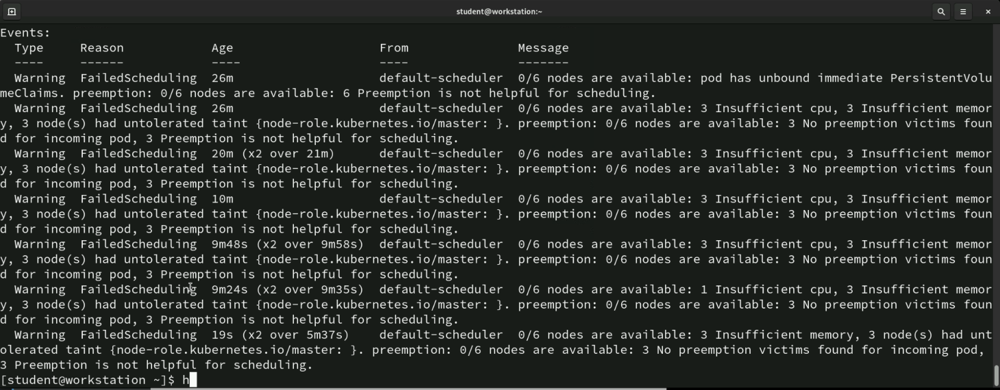
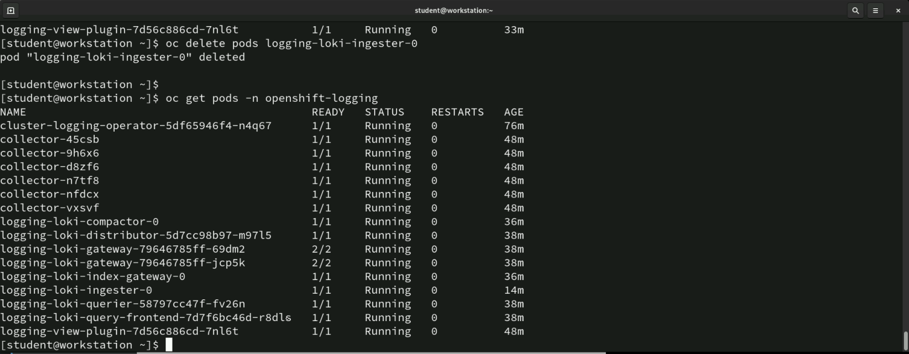
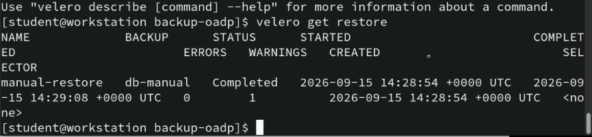
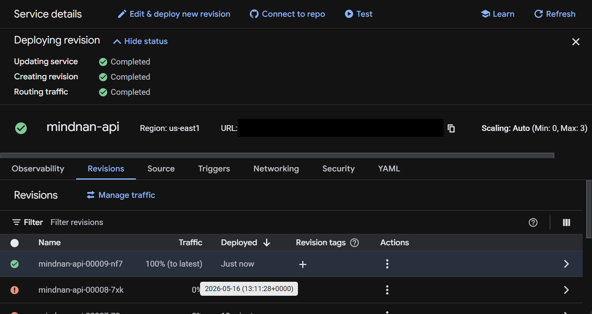
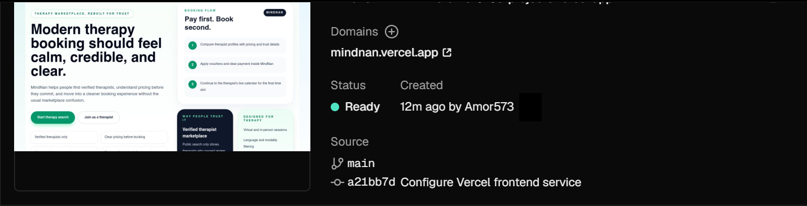
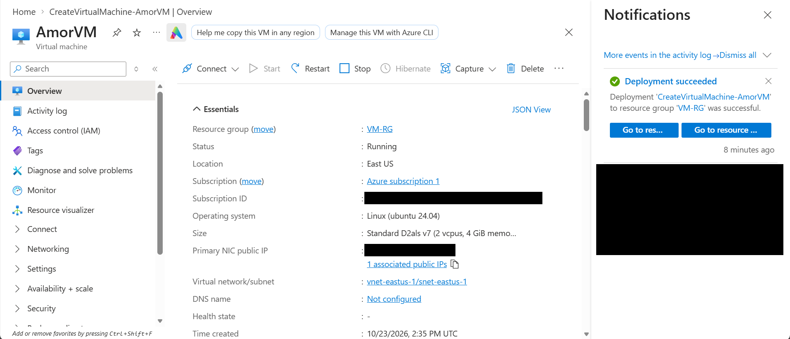
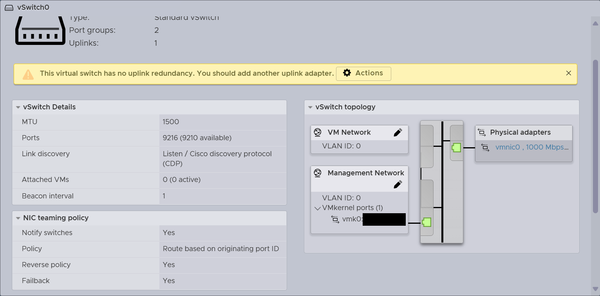
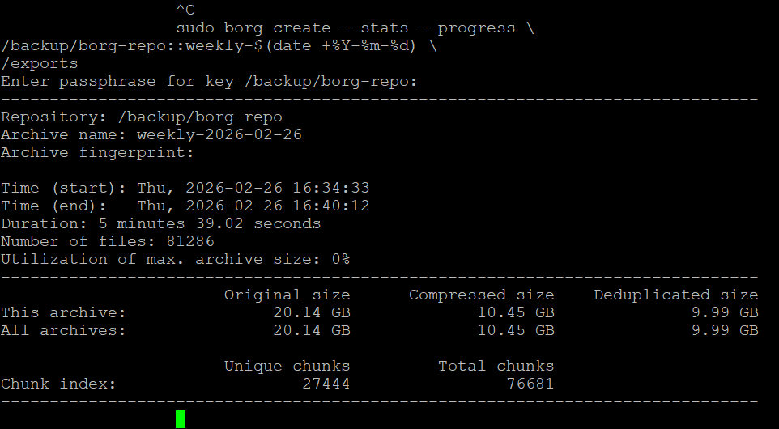

← PortfolioEngineering evidence
Selected historical captures, with the observed result and its limits stated alongside each image.
Edits use exact pixel crops and solid black redactions only. Technical output, errors and warnings are preserved. These captures do not establish production reliability or execution of a particular repository revision.
OpenShift training lab
O1 · Selected historical evidenceLogging: scheduling failure

Scheduler events show unbound storage, insufficient CPU/memory and control-plane taints. Diagnostic evidence, not a resolved state.
Presentation: exact crop; no redactions within the retained region.O2 · Selected historical evidenceLogging: pods running

A later capture shows the listed logging pods Ready and Running after an ingester pod deletion. It does not prove log ingestion, retention or alert delivery.
Presentation: exact crop; no redactions within the retained region.O3 · Selected historical evidenceVelero restore result

manual-restore reports Completed, 0 errors and 1 warning. Application data integrity and the warning cause are not established by this capture.
Presentation: exact crop; no redactions within the retained region.MINDNAN
W1 · Selected historical evidenceMINDNAN product interface
Historical public-facing homepage capture. Shows the interface and intended booking journey; does not verify payments, therapist credentials, bookings or current service health.
Presentation: exact crop; no redactions within the retained region.W2 · Selected historical evidenceCloud Run revision completed

Service update, revision creation and traffic routing are marked Completed; the latest revision receives 100% traffic. Earlier failed revisions remain visible. This is deployment-state evidence, not end-to-end application testing.
Presentation: exact crop and solid redactions.W3 · Selected historical evidenceVercel frontend Ready

Historical Vercel frontend deployment shows Ready and source revision a21bb7d. This is not a new deployment of this portfolio or evidence of current availability.
Presentation: exact crop and solid redactions.Azure VM lab
A1 · Selected historical evidenceAzure VM deployment

AmorVM is shown Running with Deployment succeeded. Account, subscription identifier, public IP and billing details are removed. This is a VM deployment, not proof of AKS or Terraform execution.
Presentation: exact crop and solid redactions.VMware lab
V1 · Selected historical evidenceESXi network topology

Two port groups and one uplink are visible. The no-uplink-redundancy warning is preserved. This documents topology inspection, not high availability or a completed VPN migration.
Presentation: exact crop and solid redactions.Infrastructure backup lab
V2 · Selected historical evidenceBorg backup archive result

Borg reports 81,286 files, 20.14 GB original, 10.45 GB compressed and 9.99 GB deduplicated for an archive. This shows archive creation; a successful restore has not been demonstrated.
Presentation: exact crop and solid redactions.